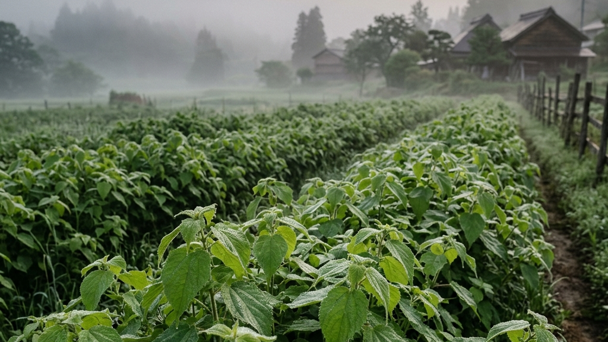
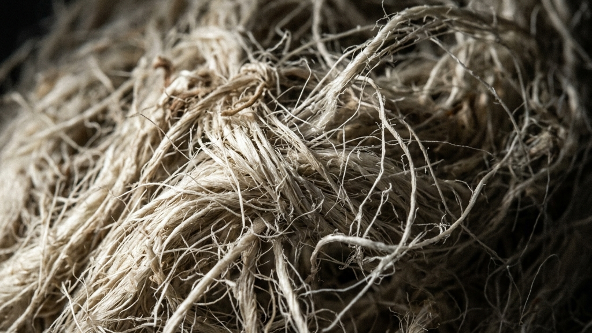
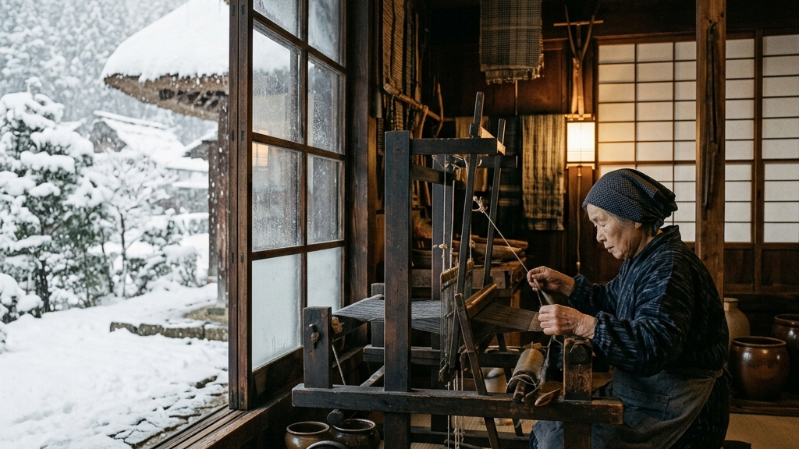
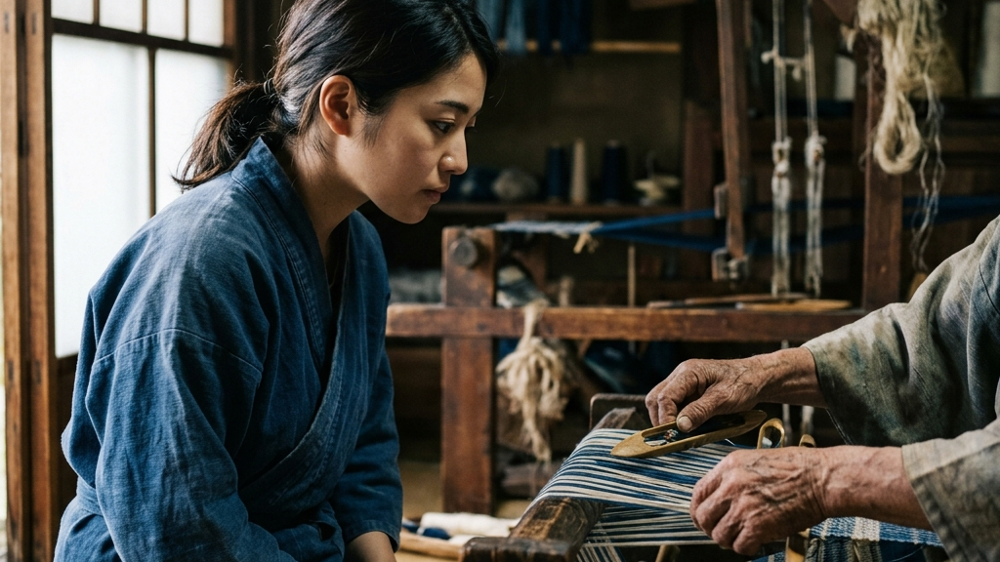
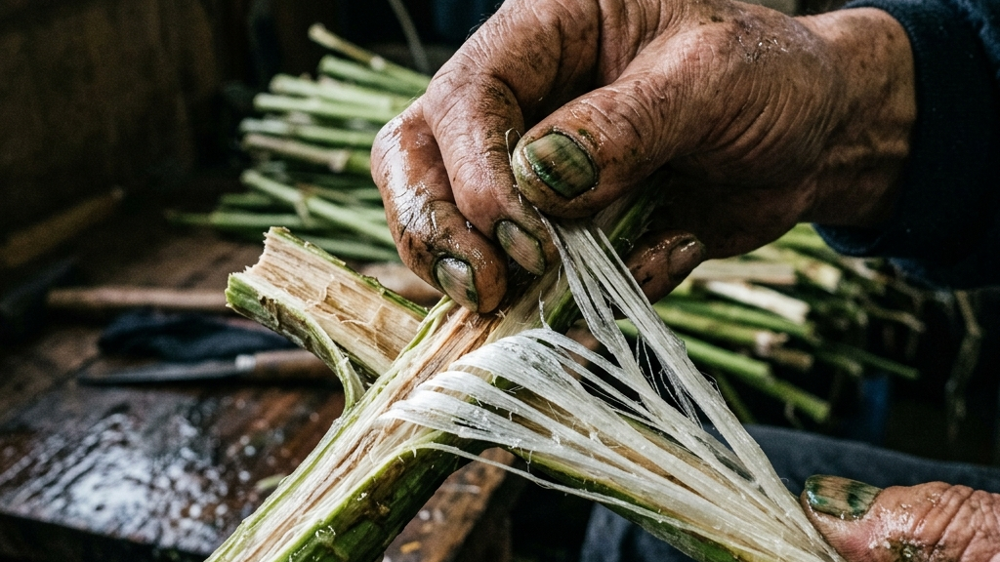
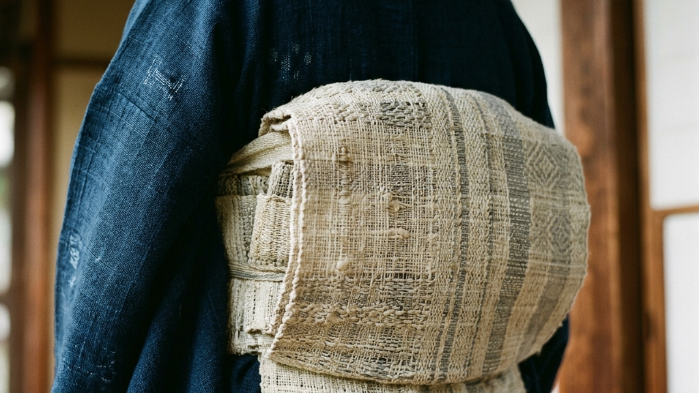

緑深い山々に囲まれた福島県昭和村の朝は、静寂と白い霧に包まれます。その霧の奥深く、陽光を浴びて青々と茂る多年草の葉が揺れています。イラクサ科の植物であり、古来より「苧麻」と呼ばれてきたその草こそが、千年以上の歴史を紡いできたからむし織の源流です。私たちの祖先が文字を持つはるか以前から、この草は衣服となり、生活を守り、精神の拠り所となってきました。
【本稿で紐解く3つの核心】
現代社会は、瞬時に情報を処理し、効率的に成果を得ることを最優先に動いています。しかし、その急速な流れの対極において、ただひたすらに時間をかけ、自然の歩みに寄り添いながら作られる布があります。それがからむし織です。種をまき、育て、繊維を採り、糸を績み、そして手織りで一枚の布へと仕上げていく。そのすべてのプロセスには、人の手による気が遠くなるような時間と、自然との泥臭い対話が刻まれています。本稿では、福島県昭和村の風土が育んだ奇跡の布の真実に迫り、そこに込められた知恵と技術の継承のあり方を深く見つめます。

縄文時代の遺跡から発掘された出土品の中に、すでにその痕跡を残していた繊維があります。それが、からむし織の原料である苧麻です。考古学的な調査によれば、青森県の三内丸山遺跡などから苧麻の繊維で編まれたとみられる布や縄が発見されており、その起源は今から数千年以上も前に遡ります。シルクロードを経て日本にもたらされた絹や、江戸時代以降に普及した綿とは異なり、日本列島に自生していた野生の草から作られる自然布こそが、私たちの衣服文化の真なる原風景でした。
現在、私たちが日常的に手にする「麻」と表示された衣類の多くは、亜麻（リネン）や苧麻（ラミー）の機械紡績糸で作られたものです。しかし、からむし織で用いられる手績みの苧麻糸は、それらとは全く異なる物理的特性と美学を持っています。茎から手作業で引き出された繊維は、極めて強靭でありながら、独特のしなやかさと神秘的な光沢を放ちます。その光沢は、繊維の内側に光を透過させる微細な中空構造によるものであり、人工的な化学繊維や、機械で細かく裁断されて紡がれた糸には決して真似のできない静謐な気品を湛えています。
歴史の荒波の中で、多くの地域で途絶えてしまったこの自然布の技法が、なぜ現代にまで生き残ることができたのでしょうか。その背景には、からむしという植物が持つ野生の生命力と、それを取り巻く人々の圧倒的な執念がありました。手作業で繊維を一本ずつ裂き、繋ぎ合わせていく「手績み」の作業は、機械化することが絶対に不可能です。指先の感覚だけを頼りに、均一な太さの糸を作り出していく行為は、人間の身体能力の極限であり、ある種の瞑想的な祈りにも似ています。このようにして作られた糸は、水分を吸収すると繊維が引き締まり、使うほどに肌に馴染んで強度を増していくという、驚異的な経年変化を見せます。
このような自然布の持つ絶対的な美と強度は、単なるノスタルジーや実用の道具を超えて、現代の私たちが失いつつある「時間」に対する態度を鋭く問いかけています。効率的な生産システムでは決して生み出せない、人間と自然が一体となった手技の集積。それこそが、千年の年月を越えて受け継がれてきた工芸の強度であり、未来へ遺すべき本質的な資産です。このように手仕事を介して記憶を次世代へ繋ぐ試みは、私たちが未来の文化のあり方を構想する上での確かな防波堤となります。このような手仕事の持つ可能性については、手技という名の記憶を繋ぐ。次世代の工芸職人に託された1,000年先の未来でも深く考察されていますが、からむし織はその極限の証明と言えます。

福島県奥会津地方に位置する昭和村は、冬になると数メートルもの雪に埋もれる極寒の山村です。半年近くにわたって周囲との交通が遮断され、白一色の沈黙に包まれるこの風土こそが、実は高品質なからむしの繊維を育むための絶対的な条件でした。苧麻という植物は、極度の乾燥を嫌います。夏の間、山々から湧き出る清らかな水と、奥会津独特の朝霧を伴う湿潤な空気が、苧麻の茎を限界まで柔軟に伸ばし、繊維をきめ細かくしなやかに育てるのです。自然の理不尽とも言える豪雪と、それに伴う多湿な環境がなければ、この最高峰の布は存在し得ませんでした。
昭和村の人々は、この厳しい気候環境に抗うのではなく、その物理的特性を巧みに手仕事のプロセスへ取り込んできました。たとえば、雪の上に織り上がったからむし布を広げる伝統的な技法は、雪が溶ける際の天然の化学変化を利用したものであり、布にこの上ない純白と凛とした空気感を与えます。科学技術が発達した現代であっても、この雪と太陽がもたらす自然の作用を人工的な生産ラインで完全に再現することはできません。昭和村という土地に深く根ざした「土着の知恵」が、奇跡的な美学となって布の上に顕現しているのです。
この土地で生きる人々にとって、からむしを栽培し、布を織るという営みは、単なる産業や経済活動を超えた「生存そのものの表現」でした。作物を育てることができない長い冬の間、村人たちは囲炉裏の火を囲み、黙々と苧麻の茎から繊維を引き出し、糸を績み続けてきました。その終わりのない非効率な繰り返しこそが、厳しい冬を生き延びるための静かな闘いであり、家族を守るための誇りそのものでした。昭和村に染み付いたこの土着の記憶は、何世代にもわたる人々の手の動きを通じて、現代に生きる私たちへ脈々と受け継がれています。
現代の効率主義から見れば、このように一つの風土に極端に依存したモノづくりは、極めてリスクが高く非効率に映るかもしれません。しかし、その土地でしか生まれ得ないという絶対的な制約こそが、他の追随を許さない圧倒的なアイデンティティ（強度）を工芸に与えるのです。均一でどこでも作れるプロダクトが溢れる世界だからこそ、昭和村の豪雪と霧が宿るからむし織は、唯一無二の存在として深い精神的な重力を放っています。
「自然を制圧するのではなく、その厳しさの内に身を委ね、時間を味方にすること。豪雪という理不尽こそが、最高峰の白き繊維を育む揺りかごとなる。」
— 昭和村に伝わる雪と伝統の対話

多くの地方で伝統工芸が後継者不足により静かに息を引き取っていく中、昭和村のからむし織は、他に類を見ない驚異的な継承モデルを構築してきました。それが、1994年から開始された「からむし織体験生（通称・からむし織姫）」事業です。この制度は、日本全国から伝統技術の習得を志す若者を村に招き、1年間にわたって村の熟練職人（「からむし匠」）から、苧麻の栽培、繊維の引き出し、手績み、そして地機での製織に至るすべての技術を直接身体に叩き込むという、行政と地域が一体となった育成エコシステムです。2026年現在、この事業は33期目を迎え、累計で100名を超える女性たちがこの門を叩いてきました。
この織姫制度の本質的な強さは、単なる「技術の講習」に留まらない、コミュニティとしての深い関わり合いにあります。体験生たちは村の古民家に滞在し、高齢の職人たちと寝食を共にしながら、言葉にできない「手触り」や「呼吸」といった暗黙知を伝承していきます。繊維を裂く指の角度、糸を績む際の力加減、地機を踏む際にかける体重のバランス。これらは決してデジタルデータや教科書としてマニュアル化できるものではありません。職人と体験生が膝を突き合わせ、何度も何度も失敗を繰り返すという、極めて濃密で非効率な時間の共有を通じてのみ、技術は一人の身体からもう一人の身体へとインストールされていくのです。このような女性伝統工芸士たちの静かな闘いと意志のあり方については、時代を紡ぐ、静謐なる意志。女性伝統工芸士たちが提示する「手」と「美」の現在地でもその深層が語られています。
さらに、この育成エコシステムは、単なる技術の伝承にとどまらず、村全体の「人口と産業の循環」をも生み出しています。1年間の過酷な研修を終えた織姫たちの多くが、そのまま昭和村へ移住して定住を選択しています。かつては都会で暮らしていた若い女性たちが、昭和村の土着の魅力とからむし織の美学に魅了され、今度は自らが「伝える側」となって新たな期生を指導するという、美しい循環が村の内部で自律的に回り始めているのです。これは、一時的な支援金やパフォーマンスとしての伝統保護とは一線を画す、真に持続可能な工芸再生の形と言えます。この地域に根ざした救済システムと土着の記憶の強さについては、能登の歴史的工芸を紐解いたなぜ能登に揚げ浜式製塩が残ったのか 加賀藩の救済システムと土着の記憶とも深く共鳴する部分があります。
織姫たちが村の高齢の職人たちに注ぐ敬意と、職人たちが若き異分子を受け入れる寛容さ。この両者が交差する場所にこそ、閉鎖的な村社会や形骸化したギルド制を打ち破る、本物の強さが宿っています。33年という途方もない歳月をかけて、泥臭くこの仕組みを維持し、磨き続けてきた昭和村の執念は、限界集落における伝統工芸の生存戦略として、世界に誇るべき圧倒的なモデルケースを示しています。
過疎と高齢化により途絶の危機に瀕していた昭和村が、村外から後継者候補を募る革新的な研修制度を開始。当初は懐疑的な目もありながら、地域の職人たちとの対話が始まりました。
栽培技術の保存活動と、長年の織姫制度による継承実績が認められ、技術の歴史的・芸術的価値が最高峰として国家的に公式認定されました。
卒業生たちが定住者として村に深く根を下ろし、栽培の維持だけでなく、今や新たな体験生を迎え入れて育てる「教えの連鎖」を構成しています。

からむし織の美しさを語る際、多くの人は織り上がった布のしなやかさや白さに目を奪われます。しかし、その布が生み出される背景には、美しさとは程遠い、極めて「泥臭い肉体労働」が存在しています。からむし織の製造プロセスは、7月の猛暑の中での苧麻の刈り取りから本格化します。背丈ほどに伸びた苧麻を一本ずつ鎌で刈り取る作業は、虫や鋭い葉による皮膚の痛みに耐えながら行われる過酷なものです。しかし、核心となる試練はその後に控える「からむし引き」と呼ばれる繊維の引き出し工程にあります。
からむし引きは、刈り取ったその日のうちに処理を終えなければなりません。時間が経つと茎が乾燥し、繊維をきれいに引き出すことができなくなるからです。職人たちは、薄暗く湿った作業小屋に籠もり、「引き板」と「引きナイフ」と呼ばれる簡素な道具を用いて、苧麻の茎の外皮を力強く削ぎ落としていきます。冷たい水に茎を浸し、何度も何度も引き板に擦りつける動作は、肩や腰、そして何よりも指先に凄まじい負担を強います。爪の隙間にはからむしの灰汁が深く染み込み、手の皮はめくれ、指の関節は腫れ上がります。この過酷な作業を何日も繰り返すことでしか、あの神秘的な白い繊維を手にすることはできません。
この繊維を引き出す作業には、いかなる妥協も許されません。引き方が甘ければ外皮の緑色の不純物が残り、布にした際に染みとなって現れます。逆に力を入れすぎれば、最も重要な内側の極細の繊維を傷つけ、糸にすることができなくなってしまいます。長年の経験によって培われた指先の微細な感覚だけが、力加減の境界線を正しく見極めることができるのです。この「からむし引き」を終えた繊維は、乾燥させて保存され、今度は冬の長い時間をかけて、指先でさらに細く割かれ、撚り合わされて一本の糸へと績まれていきます。
この「手績み」の工程こそ、まさに人間が自然の制約に自らの身体を完全に同調させるプロセスの極限です。乾燥して保管されていたからむしの繊維束を、爪の先を用いて幅1ミリ以下という髪の毛ほどの細さに一本一本割いていきます。そして、その極細の繊維の端と端を、指先で撚りをかけながら継ぎ合わせていくのです。この際、結び目は一切作りません。結び目があると、布を織った際に突起となって現れ、からむし織特有の滑らかな肌触りと光沢を損ねてしまうからです。職人たちは、自らの唾液で繊維の端を湿らせ、手のひらの上で繊細に擦り合わせることで、まるで最初から一本の長い糸であったかのように繊維を「同化」させていきます。気の遠くなるような時間をかけ、数十万回ものこの動きを繰り返すことで、ようやく機にかけられる一本の糸が紡ぎ出されます。これは、機械紡績では絶対に再現できない、人間の驚異的な忍耐力と指先の感覚だけが成し得る驚異の技です。
この手仕事の深さに対峙したとき、私たちは自然というコントロールできない存在に対する、職人たちの絶対的な姿勢を見出すことができます。自然がもたらす素材は、毎年、あるいは一本ごとにその性質が異なります。太さ、硬さ、湿り気。それらを人間の都合に合わせて制御しようとするのではなく、人間がその素材の個性に徹底的に寄り添い、自らの手の動きを最適化させていく。この非効率極まりない対話の中にこそ、からむし織が宿す「工芸的強度」の本質が隠されています。不規則な自然素材を受け入れ、自らの身体で構造化していくその姿勢は、人間の限界を押し広げる手仕事の極みです。
| 製造プロセス | 身体的・物質的摩擦 | 美学・哲学の本質 |
|---|---|---|
| 焼き畑 and 刈り取り | 5月の萌芽期における畑の焼き払いと、7月炎天下での手作業による全数刈り取り。 | 火と灰を用いた土地の浄化。自然サイクルに対する無条件の恭順。 |
| からむし引き（苧引き） | 収穫後24時間以内に外皮を剥ぎ、専用の道具で繊維を削り出す。指や爪が真っ黒に染まる過酷な肉体労働。 | 不純物を極限まで削ぎ落とし、純度100%の白い「靭皮」を抽出する引き算の儀式。 |
| 手績み（てうみ） | 乾燥した繊維を指先で極細に裂き、唾液で湿らせながら一本に撚り繋ぐ。結び目を一切作らない無限の反復。 | 人間の指先の感覚のみに頼る、時間と空間を編み上げる瞑想的プロセス。 |
| 地機（じばた）での製織 | 織り手の腰当てと経糸をロープで直結し、自らの身体の伸縮によって張力を微細に制御しながら織る。 | 身体と機が完全に一体化し、呼吸のゆらぎがそのまま布の質感（表情）へと転写される美。 |

からむし織で仕上げられた帯や衣は、単なる一時的な衣服や流行のファッションアイテムではありません。それは、世代を超えて受け継がれていく「1,000年先の資産」としての強烈な強度を持っています。苧麻の繊維は、絹やウールといった動物性繊維に比べて、経年劣化に対して圧倒的に強い耐性を持っています。正倉院の宝物庫に収められた古代の苧麻布が、千年以上経った今でもその白さと強度を維持しているというファクトが示す通り、この布には時間を味方にする性質が宿っています。
驚くべきことに、手績みのからむし布は、織り上がったばかりの瞬間が完成形ではありません。むしろ、人が袖を通し、肌に触れ、摩擦を繰り返すことによって、布の本来の美しさが立ち上がってくるのです。最初のうちは、自然布特有の張りや硬さがありますが、年数を重ねるごとに繊維が少しずつほぐれ、羽毛のように柔らかく、吸い付くような手触りへと変化していきます。汗を吸えば涼しさを増し、風を通せば呼吸するように湿気を逃がす。この人肌との共生による「経年変化の美学」は、買った瞬間から劣化が始まる現代の化学繊維や、効率最優先の大量生産品とは本質的に異なる次元の価値を提示しています。
さらに、からむし織の物質的特長として、「水に対する驚異的な強度」が挙げられます。多くの高級繊維は水濡れによって縮みや型崩れを起こしますが、苧麻は水に濡れることで繊維が膨張し、分子同士がさらに強固に引き締め合うという物理的特性を持っています。このため、汗をかきやすい日本の夏において、家庭で優しく水洗いを行うことで、付着した皮脂や汚れが驚くほど綺麗に落ちるだけでなく、乾燥させることで布自体が本来のハリと清涼感を取り戻し、「若返る（生き返る）」のです。この類稀なる自浄性と耐久性こそが、からむし織を一生もの、ひいては世代を超えるアセットたらしめている物質的な裏付けです。
このような最高峰の工芸的資産は、現代のグローバルなラグジュアリー市場や、アート市場においても新たな価値として再評価されています。素材や製造の背景にある圧倒的な物語性と、極めて限られた生産数。これらは、単なる消費財としての価値ではなく、所有する人の審美眼と知層を証明する「文化的なアセット」として機能し始めているのです。からむし織の帯や着物は、そのすべてのプロセスが人間の手によって行われるため、年間で織り上げられる数は極めて限られており、市場においては数十万から数百万円という価格帯で静かに取引されています。これは投機的なブランド料によるものではなく、人間の純粋な「時間の蓄積」に対する正当な対価としての価格強度です。工芸品が実用的な道具の領域を超え、永続的な価値を持つ芸術的なアセットへとシフトしている産業的構造については、日本の伝統工芸産業はなぜ年平均9.76%で拡大するのかでも詳細に分析されていますが、からむし織はその象徴的な最高峰に位置しています。
また、このような「本物」を日常の空間に取り入れ、客人を迎え入れることは、所有者の精神性の深さを静かに表現する最高の手段とも言えます。からむし織の帯やタペストリーが放つ静謐な佇まいは、効率的な日常を遮断し、そこに「豊かな余白の時間」を創り出します。こうした空間デザインと工芸の融合がもたらす価値は、空間に宿る本質的なラグジュアリーを説く伝統工芸品でおもてなし：最大100万円の補助金が叶える空間創出の文脈とも密接に結びついています。時間を蓄積し、より美しく変化していくからむし織を身に纏うことは、千年の歴史の連続性に自ら進んで参画することに他なりません。
現代を生きる私たちは、いつの間にか「待つこと」ができなくなっています。スマートフォンを開けば数秒で答えが提示され、クリック一つで翌日には物資が届く。あらゆるシステムが効率化され、スピードと時間対効果の最大化が至上の価値として称賛される世界。しかし、この便利で快適な日常の裏側で、私たちの心はかつてないほどの焦燥感と「浅さ」に蝕まれているのではないでしょうか。すぐに目に見える結果が出ないことに苛立ち、根本的な解決を待てずに一時しのぎの小手先の手段に逃げてしまう。私自身、日々の経営や組織の舵取りにおいて、そんな「待てない病」という現代の深刻な病理と向き合い、自らの焦りや実力不足といったダサい弱さに苛まれる瞬間が数多くあります。
だからこそ、福島県昭和村で紡がれるからむし織のプロセスに対峙したとき、私の心には強烈な衝撃と、ある種の深い救いが走りました。からむし織の世界には、現代社会のスピードは1ミリも通用しません。どんなに技術が発達し、AIが高度な計算を行おうとも、春に種をまいた苧麻が育ち、夏に収穫され、冬に糸を績み、翌年の春にようやく一枚の布に織り上がるという「1年」という大自然の絶対的なサイクルを短縮することは絶対に不可能なのです。不揃いでコントロールできない自然素材を前にして、職人たちは焦ることもなく、ただ静かに「待つ」。その姿は、手っ取り早い結論や目先の利益を求めて右往左往する現代の私たちのあり方を、静かに、しかし極めてソリッドに批判しています。
特に心を打つのは、日本中から昭和村へ集まり、黙々と伝統技術の習得に身を投じる若き「織姫」たちの姿勢です。彼女たちは、効率的な都会の暮らしを捨て、冷たい水でからむしを引き、指の皮がめくれるほどの摩擦に耐えながら、先人たちが何百年もかけて磨き上げてきた「型」を徹底的に自らの身体へインストールしていきます。そこには、自己流で要領よく立ち回ろうとする小賢しいプライドなど存在しません。徹底的に先人を真似て、不器用に向き合い続ける。その愚直な守破離のプロセスの果てにしか、本物のオリジナル（自立した職人としての美学）は生まれないという真理を、彼女たちは誰よりも深く身体感覚で理解しているのです。これは、「理想は頭で思い描くものではなく、今目の前にある泥臭い作業と必死に向き合い続けた日々の連続性の先に見えてくるものだ」という、あらゆるモノづくりと経営に通底する普遍的な真理そのものです。
かつて私は、250人いた社員を20人にまで縮小し、かつての成功体験や拡大の理想をすべて自らの手で削ぎ落とすという、痛みを伴う再構築の過程を経験しました。その不純物を取り除く過程は、精神的にも肉体的にも極めて苦しい摩擦の連続でしたが、本当に残すべき「核心（コア）」だけを直視したからこそ、本質的な強さと次の成長への足がかりを掴むことができました。この「削ぎ落とすことの苦痛と美学」は、からむしの茎から青い不純物を徹底的に削り落として真っ白な靭皮だけを抽出する「からむし引き」のプロセスと、驚くほど美しく接続されます。人間の成長も、組織の構築も、および伝統工芸の傑作も、余計なノイズを極限まで引き算し、純度を高めていく過酷な時間の積み重ねによってのみ、磨き上げられていくのです。
また、30代のころの私は、これといった特定の「専門性がない」ことに強いコンプレックスを抱き、優秀な専門家たちに囲まれて自分の存在価値を見失いそうになった時期がありました。しかし、AIという強力な局所的専門家たちが瞬時に答えを出してくれる時代になった今、その弱みは「全体をスキャンし、異なる要素を泥臭く繋ぎ合わせて物語（文脈）を編み上げる指揮官（オーケストレーター）」としての強みへと完全に反転しました。昭和村のからむし織を未来へ繋ぐエコシステムもまた、個々の卓越した職人技だけでは成り立ちません。栽培、引き、手績み、製織、そして行政や地域社会という異なるピースを泥臭く繋ぎ合わせ、一つの「文化の循環」として調律する知恵があってこそ、33期という執念の連続性が可能になったのです。
私たちは今、もう一度「待つ力」を取り戻さなければなりません。一時的な効率の罠から脱却し、理不尽な自然や思い通りにならない他者、そして何よりも「まだ結果の出ない自分自身」を受け入れ、じっくりと時間をかけて耕していくこと。奥会津の豪雪に閉ざされながら、静かに糸を績み続ける人々の指先の動きは、現代の喧騒に対する最も美しい「時間の防波堤」として、1,000年先の未来へ向けて静かに屹立しています。
Reference:
昭和の伝統工芸「からむし織」習得に意欲、織姫33期生を歓迎
伝統を身に纏い、1,000年先の未来へ遺す。Kakeraが織り上げる西陣織アロハシャツの哲学と私たちの物語は、CONCEPT、Kakera Aloha、およびABOUTよりご覧いただけます。